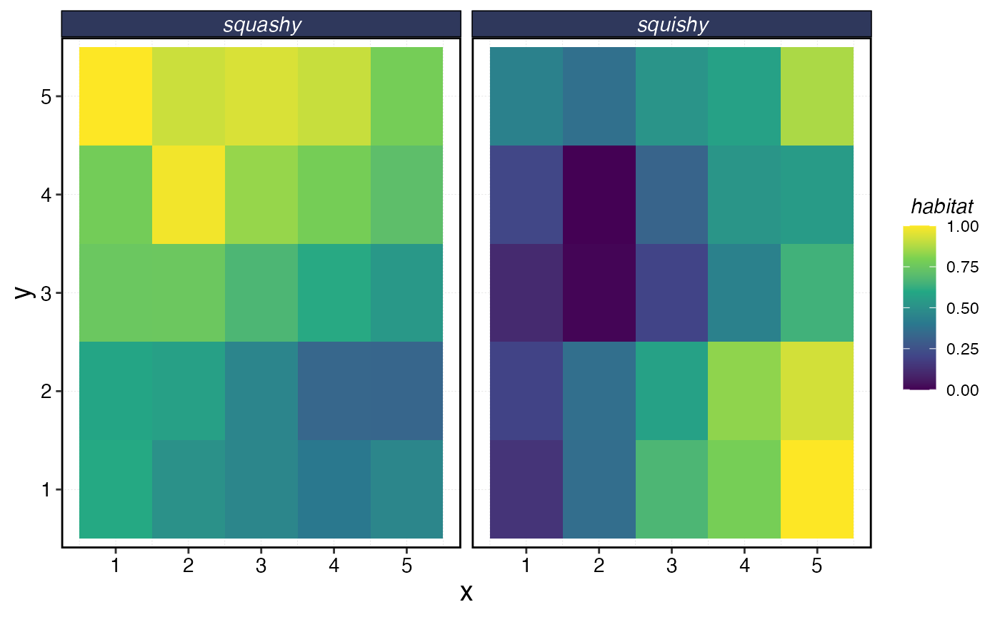
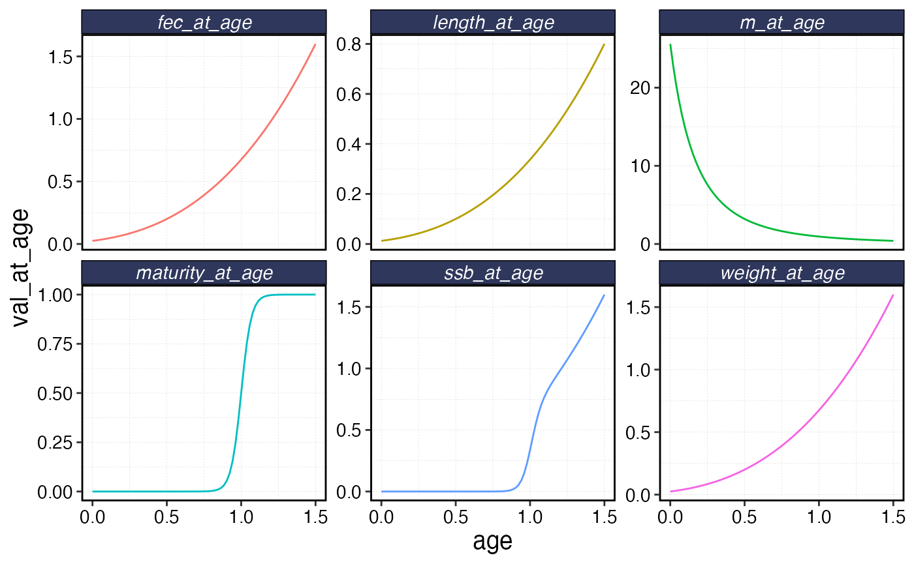
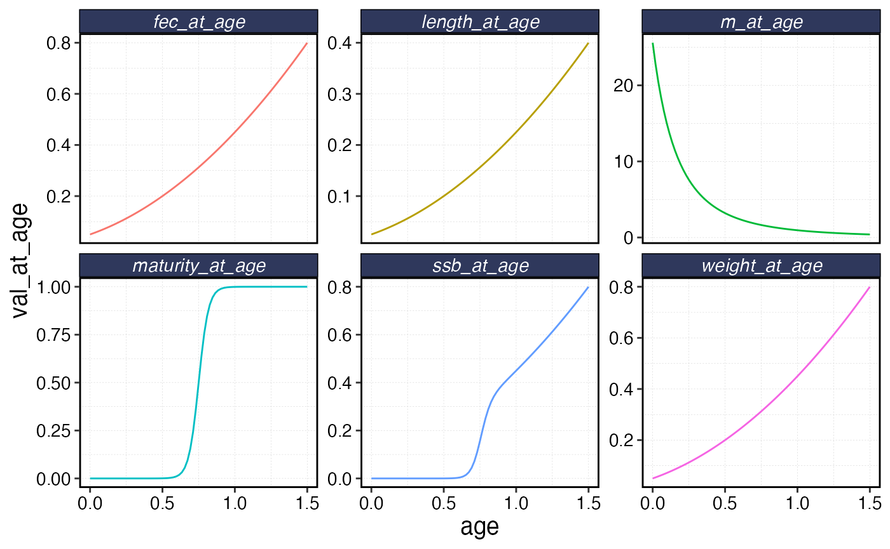

library(marlin)
library(tidyverse)
#> ── Attaching core tidyverse packages ──────────────────────── tidyverse 2.0.0 ──
#> ✔ dplyr 1.1.4 ✔ readr 2.1.5
#> ✔ forcats 1.0.0 ✔ stringr 1.5.1
#> ✔ ggplot2 3.5.2 ✔ tibble 3.2.1
#> ✔ lubridate 1.9.4 ✔ tidyr 1.3.1
#> ✔ purrr 1.0.4
#> ── Conflicts ────────────────────────────────────────── tidyverse_conflicts() ──
#> ✖ dplyr::filter() masks stats::filter()
#> ✖ dplyr::lag() masks stats::lag()
#> ℹ Use the conflicted package (<http://conflicted.r-lib.org/>) to force all conflicts to become errors
library(tictoc)
library(ggridges)
theme_set(theme_marlin())Invertebrates have some slightly different life history than finfish.
marlin has some capabilities to simulate some of these
dynamics, but be warned that the less like a finfish, the less
appropriate marlin may be.
First, let’s set up parameters. Since invertebrates are not included
in FishLife, all required life history values must be
supplied manually.
For invertebrates, we are going to implement a couple of features.
We are going to run the simulation on a weekly timestep, to better approximate a fast growing species
We are going to use a power function to model size at age, to approximate a critter that simply expands in volume as it ages, rather than reaching an asymptotic size
We will make the species semelparous, meaning that individuals die after spawning. This is implemented by introducing a mortality term in which
1 - (proportion_mature_at_age)individuals in each age group die after spawning
resolution <- 5 # the resolution of the system
patch_area <- 1 # the area of each patch
kp <- .5 # the patchiness of habitat
years <- 10 # number of years to run simualtion
seasons <- 52 # weekly time step
time_step <- 1 / seasons
max_age <- 1.5 # the maximum age of the animal (in years)
length_bin_width <- 0.1 # the width of each length bin in centimeters
length_a <- 0.1 # scale for growth power function
length_b <- 3 # exponent for growth power function. Consider a spherical octopus.
lorenzen_c <- -1 # the rate of the lorenzen natural mortality curve. More negative values increase natural mortality at age 0 relative to max age.
m <- 0.4 # asymptotic natural mortality
t0 <- -.5 # size at age 0
ages <- seq(0, max_age, by = time_step)
length_at_age <- length_a * (ages - t0)^length_b
max_length <- max(length_at_age)
m_at_age <- m * (length_at_age / max(length_at_age))^lorenzen_c
critter_correlations <- matrix(c(1, -.5, -.5, 1), nrow = 2, byrow = TRUE) # simulate spatial correlation between species
species_distributions <- sim_habitat(
critters = c("squishy", "squashy"),
resolution = resolution,
patch_area = patch_area,
kp = kp,
output = "list",
critter_correlations = critter_correlations
)
species_distributions$critter_distributions |>
map(as.data.frame) |>
list_rbind(names_to = "critter") |>
group_by(critter) |>
mutate(x = 1:n()) |>
ungroup() |>
pivot_longer(-c(critter, x), names_to = "y", values_to = "habitat") |>
group_by(critter) |>
mutate(habitat = habitat / max(habitat)) |>
ungroup() |>
ggplot(aes(x, y, fill = habitat)) +
geom_tile() +
facet_wrap(~critter) +
scale_fill_viridis_c()
Next, we’ll set up the fauna and fleet objects
fauna <-
list(
"squishy" = create_critter(
spawning_seasons = c(1:20),
habitat = species_distributions$critter_distributions$squishy,
common_name = "squishy",
growth_model = "power",
length_a = length_a,
length_b = length_b,
length_bin_width = length_bin_width,
t0 = t0,
cv_len = 0.6,
m_at_age = m_at_age,
max_age = max_age,
age_mature = max_age - .5,
semelparous = TRUE,
delta_mature = .1,
weight_a = 2,
weight_b = 1,
adult_diffusion = .1,
recruit_diffusion = 10,
init_explt = 1.2,
resolution = resolution,
sigma_rec = 0,
ac_rec = .3,
query_fishlife = FALSE,
seasons = seasons
),
"squashy" = create_critter(
spawning_seasons = c(21:40),
habitat = species_distributions$critter_distributions$squashy,
common_name = "squashy",
growth_model = "power",
length_a = length_a,
length_b = 2,
length_bin_width = length_bin_width,
t0 = t0,
cv_len = 0.6,
m_at_age = m_at_age,
max_age = max_age,
age_mature = max_age / 2,
semelparous = FALSE,
delta_mature = .1,
weight_a = 2,
weight_b = 1,
adult_diffusion = .1,
recruit_diffusion = 10,
init_explt = .6,
resolution = resolution,
sigma_rec = .6,
ac_rec = .3,
query_fishlife = FALSE,
seasons = seasons
)
)
fleets <- list(
"artisanal" = create_fleet(list(
"squishy" = Metier$new(
critter = fauna$squishy,
p_explt = 0.5,
sel_unit = "p_of_mat",
sel_start = 0.1,
sel_delta = 0.1
),
"squashy" = Metier$new(
critter = fauna$squashy,
p_explt = 0.5,
sel_unit = "p_of_mat",
sel_start = 0.1,
sel_delta = 0.1
)
), resolution = resolution),
"commercial" = create_fleet(list(
"squishy" = Metier$new(
critter = fauna$squishy,
p_explt = 0.5,
sel_unit = "length",
sel_start = 0.25 * max_length,
sel_delta = .01
),
"squashy" = Metier$new(
critter = fauna$squashy,
p_explt = 0.5,
sel_unit = "p_of_mat",
sel_start = 0.5,
sel_delta = 0.1
)
), resolution = resolution)
)
fleets <- tune_fleets(fauna, fleets, tune_type = "explt", years = 20)
fauna$squishy$plot()
fauna$squashy$plot()
sels <- data.frame(
artisinal = fleets$artisanal$metiers$squishy$sel_at_length,
commercial = fleets$commercial$metiers$squishy$sel_at_length,
length = as.numeric(colnames(fauna$squishy$length_at_age_key))
)
sels |>
pivot_longer(-length, names_to = "fleet", values_to = "selectivity") |>
ggplot(aes(length, selectivity, color = fleet)) +
geom_line()
tic()
squishy_sim <- simmar(fauna, fleets, years = years, cor_rec = critter_correlations)
toc()
#> 1.261 sec elapsed
processed_squishy <- process_marlin(sim = squishy_sim, time_step = time_step)
processed_squishy$fauna |>
group_by(step, age, mean_length) |>
summarise(number = sum(n)) |>
group_by(step) |>
mutate(pn = number / sum(number)) |>
ungroup() |>
ggplot(aes(mean_length, factor(step), height = pn)) +
geom_ridgeline(stat = "identity", color = "transparent", fill = "red", scale = 10) +
theme(axis.text.y = element_blank(), axis.ticks.y = element_blank())
#> `summarise()` has grouped output by 'step', 'age'. You can override using the
#> `.groups` argument.
processed_squishy$fauna |>
filter(age == min(age)) |>
ggplot(aes(step, n, color = critter)) +
geom_line()Number of recruits over time per species.
plot_marlin(processed_squishy, fauna = fauna, plot_var = "b", max_scale = FALSE)Biomass per species over time.
b <- processed_squishy$fauna |>
group_by(year, age, critter) |>
summarise(n = sum(n)) |>
group_by(critter, year) |>
mutate(yn = n / max(n)) |>
ungroup()
#> `summarise()` has grouped output by 'year', 'age'. You can override using the
#> `.groups` argument.
mogive <- map(fauna, \(x) tibble(age = x$ages, maturity = x$maturity_at_age, semelparous = x$semelparous)) |>
list_rbind(names_to = "critter")
b |>
filter(year == max(year)) |>
ggplot() +
geom_col(aes(age, yn, fill = "Age Composition")) +
geom_line(data = mogive, aes(age, maturity, linetype = semelparous, color = "Maturity At Age")) +
facet_wrap(~critter) +
scale_fill_manual(name = "", values = "blue") +
scale_color_discrete(name = "") +
scale_y_continuous(name = "Annual Age Composition")Example age composition over the course of a year, along with maturity ogive. Note one species is semelparous, the other is not.
a <- processed_squishy$fauna |>
group_by(year, step, age, critter) |>
summarise(n = sum(n)) |>
ungroup() |>
group_by(critter, year, step) |>
mutate(sn = n / max(n)) |>
group_by(critter, year) |>
mutate(n = n / max(n)) |>
ungroup()
#> `summarise()` has grouped output by 'year', 'step', 'age'. You can override
#> using the `.groups` argument.
a |>
filter(year < 4) |>
ggplot() +
geom_density_ridges(aes(age, step, height = sn, group = step, fill = step),
stat = "identity",
color = "transparent",
scale = 4,
alpha = 0.5
) +
facet_wrap(~critter, scales = "free_x") +
scale_fill_viridis_c() +
scale_y_continuous(name = "Time Step")Age composition over time